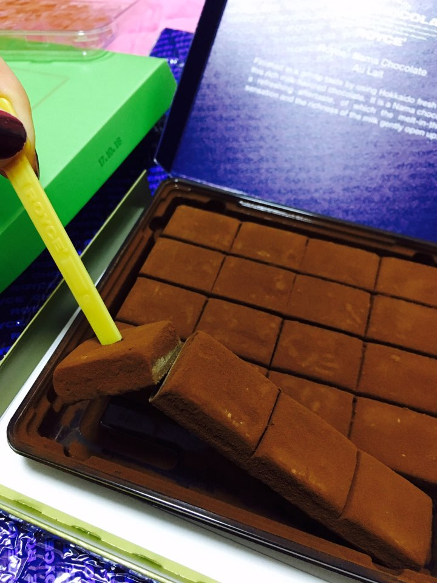

S H I N E U N Y Y's


뭐 하고 살았니?
예술 고등학교 졸업. 그림, 조각, 디자인
씐나게 놀면서 공부도 씐나게 함 뉸뉴


1일 1서브웨이..
버킷리스트
내 독자가 나한테 싸인 해달라고 하기
지구가 꽤 평화롭구나 싶은 마음 들기
사랑하는 사람이랑 우주 여행 하기
신나기 위해선 먹고 마시기? ㅋㅋㅋㅋㅋㅋ 조절 불가; ㅎ


저 동물 좋아해용


동물보다도 좋아하는 게 있다면
초 콜 렛!!!!!!!!
지하철에서 본 좋은 글 공유합니당 :)
무학
무학이란 말이 있다.전혀 배움이 없거나 배우지 않았다는 뜻이 아니다.
많이 배웠으면서도 배운 자취가 없음을 가리킴이다.
학문이나 지식을 코에 걸지 말고
지식 과잉에서 오는 관념을 경계하라는 뜻이다.
지식이나 정보에 얽매이지 않은
자유롭고 생기 넘치는 삶이 소중하다는 말이다.
지식이 인격과 단절될 때
그 지식은 가짜요. 위선자이다. _법정스님.
무학이란 말이 있다.전혀 배움이 없거나 배우지 않았다는 뜻이 아니다.
많이 배웠으면서도 배운 자취가 없음을 가리킴이다.
학문이나 지식을 코에 걸지 말고
지식 과잉에서 오는 관념을 경계하라는 뜻이다.
지식이나 정보에 얽매이지 않은
자유롭고 생기 넘치는 삶이 소중하다는 말이다.
지식이 인격과 단절될 때
그 지식은 가짜요. 위선자이다. _법정스님.